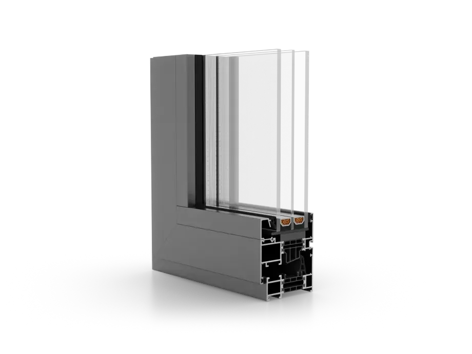
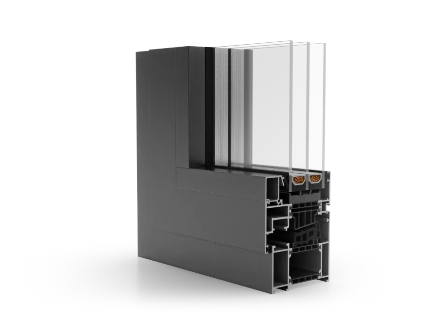

Dheco · Onze diensten
Aluminium ramen.
Aluminium ramen staan bekend om hun slank design, stevigheid en moderne uitstraling. Dankzij hun sterke profiel zijn ze ideaal voor grote glaspartijen en blijven ze jarenlang mooi met minimaal onderhoud. Een elegante keuze voor hedendaagse woningen.
4,7 / 5 · 51 Google-recensies176+ projecten per jaarWest- & Oost-Vlaanderen
 Illustratie
IllustratieVoordelen
Waarom kiezen voor aluminium ramen?
01
Strakke en moderne look
Aluminium maakt slanke raamprofielen mogelijk, ideaal voor wie houdt van een minimalistisch design met veel lichtinval.
02
Duurzaam en vormvast
Aluminium vervormt niet, is bestand tegen alle weersomstandigheden en behoudt jarenlang zijn kwaliteit.
03
Weinig onderhoud, veel stijl
Geen roest, geen afbladderende verf. Aluminium ramen blijven er netjes uitzien met een minimum aan onderhoud.
Systemen
Kies uit onze hoogwaardige aluminium ramen
Aluprof

MB-86
| Systeem | Afdichtingen | Kamers | Inbouwdiepte | Beglazing |
|---|---|---|---|---|
| MB-79N | 2 | 3 | 70 mm | Tot 63 mm (ramen) of tot 54 mm (vaste panelen/deuren) |
| MB-86 | 2 | 3 | 77 mm | Van 17,5 tot 64 mm |
Technische gegevens zoals vermeld op de huidige site van Dheco. Het beste systeem voor jouw woning bepalen we samen tijdens het adviesgesprek.
Werkwijze
In 3 stappen naar jouw oplossing.
Van eerste gesprek tot plaatsing: duidelijk, persoonlijk en netjes afgewerkt.

Vrijblijvende offerte
Wij komen vrijblijvend bij je langs voor persoonlijk advies. Samen bekijken we de mogelijkheden op vlak van ramen, deuren, afwerking, materialen en kleuren. Op basis van een eerste opmeting en jouw voorkeuren stellen we een offerte op maat voor.

Technische opmeting
Na goedkeuring van de offerte komen we opnieuw langs voor een nauwkeurige technische opmeting. Tijdens dit bezoek bespreken we ook de definitieve materiaal- en kleurkeuzes, zodat alles perfect afgestemd is op jouw project.

Plaatsing
Enkele weken na je bestelling komen we langs voor de plaatsing van je op maat gemaakte ramen en deuren. Onze vakmensen zorgen voor een vlotte, nauwkeurige montage met oog voor afwerking en detail.
Klanten aan het woord
Wat klanten zeggen.
4,7 / 551 Google-recensies
“Heel tevreden! Ik ben supertevreden met mijn nieuwe voordeur en ramen! Vanaf het eerste contact verliep alles heel vlot. De communicatie was steeds vriendelijk en duidelijk, afspraken werden correct nagekomen en er was ook de…”
“Met plezier zetten wij een review. Van fase 1 tot het einde was de samenwerking top. Zeer goede prijszetting, goede uitleg bij verkoop en prima opvolging. Plaatsing zeer professioneel en vriendelijk en perfecte afwerking!”
Premie & renovatie
Dheco kan je informeren over relevante premies voor ramen en deuren en begeleidt zowel renovaties als nieuwbouwprojecten.
Veelgestelde vragen
Antwoorden op je vragen.
Meer weten? Bekijk alle vragen.
Hoe verloopt een samenwerking met Dheco?
Na een eerste contact of offerteaanvraag plannen we een plaatsbezoek. We luisteren naar uw wensen, geven advies op maat en stellen een duidelijke offerte op. Na akkoord zorgen we voor een vlotte planning, uitvoering en opvolging.
Kan ik een vrijblijvende offerte aanvragen?
Ja, uiteraard. Via het contactformulier op de website kunt u eenvoudig een vrijblijvende offerte aanvragen. We nemen zo snel mogelijk contact met u op.
In welke regio’s zijn jullie actief?
Dheco is gevestigd in Zedelgem en actief in heel West- en Oost-Vlaanderen.
Op zoek naar een betrouwbare partner voor jouw project?
4,7 / 5 · 51 Google-recensies176+ projecten per jaarWest- & Oost-Vlaanderen